@dwish Element Functions Wishart probability density. Syntax: @dwish(X, S, n) @dwishc(X, S, n) @dwishi(X, S, n) @dwishic(X, S, n) X: sym, S: sym, matrix, n: number, Return: number Evaluate the Wishart distribution 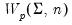 density function for sym values of X, and . The Wishart density is given by 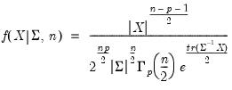 where and are symmetric matrices, and 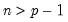. There are four different forms of the density evaluation function, corresponding to different ways of specifying . The forms are distinguished by different suffixes that are applied to the base “@dwish” command and how they change the interpretation of the S matrix argument: @dwish “” Supply . @dwishc “c” Supply the Cholesky decomposition of . This form is more efficient when performing multiple draws from the same distribution (compute the Cholesky once, but sample many times). @dwishi “i” Supply . This form is more efficient than explicitly inverting to supply . @dwishic “ic” Supply the Cholesky decomposition of . This form combines the efficiencies of the Cholesky and inverse forms. 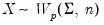 is generally thought of as the accumulated scatter matrix of n random draws from 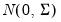, i.e., 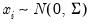, 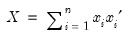, though the mathematical definition has been extended to cover real-valued n. Note that if is a Wishart random variable, then 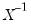 follows an inverse Wishart distribution: 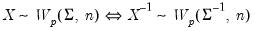 Examples = @dwish(@identity(3), @identity(3), 5) returns 0.00018.... Cross-references See also @rwish, @diwish, and @riwish.


 .
. and
and  are symmetric
are symmetric  matrices, and 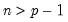.
matrices, and 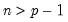. . The forms are distinguished by different suffixes that are applied to the base “@dwish” command and how they change the interpretation of the
. The forms are distinguished by different suffixes that are applied to the base “@dwish” command and how they change the interpretation of the  .
. .
.  .
.  to supply
to supply  .
. .
.  is a Wishart random variable, then 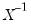 follows an inverse Wishart distribution:
is a Wishart random variable, then 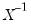 follows an inverse Wishart distribution: